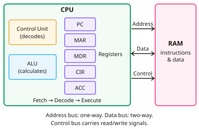

GCSE Computer Science · Topic 9
Computer systems in detail
Computer systems in detail looks closely at how the C P U, memory and storage work, and at the software that controls them.
We will follow the fetch decode execute cycle through the registers, and see what makes a C P U faster.
Then we compare R A M, R O M and virtual memory, choose secondary storage, build logic circuits, and study operating systems and utilities.
- 6 subtopics
- 266 questions
- Free: 9.1 notes and 10 questions
In this topic
- 9.1Von Neumann architecture and the fetch-decode-execute cycle with registersFree below · 29 questions
- 9.2Factors affecting CPU performance: clock speed, cores and cacheOpen in Full Marks · 31 questions
- 9.3Primary memory: RAM, ROM and virtual memoryOpen in Full Marks · 41 questions
- 9.4Secondary storage: magnetic, optical and solid state, and choosing storageOpen in Full Marks · 74 questions
- 9.5Boolean logic: AND, OR, NOT, XOR gates, truth tables, logic diagrams and expressionsOpen in Full Marks · 58 questions
- 9.6Operating systems and utility softwareOpen in Full Marks · 33 questions
9.1 · Free notes
Von Neumann architecture and the fetch-decode-execute cycle with registers

Key points
- The Von Neumann architecture uses the stored program concept: program instructions and data are both held as binary in the same main memory (RAM), and the CPU fetches instructions from it one at a time.
- The main components are the CPU (containing the control unit, ALU, registers and cache), main memory, and input/output devices, all linked by buses.
- The control unit (CU) decodes each instruction and sends control signals to coordinate the other parts of the CPU, memory and I/O.
- The ALU (arithmetic logic unit) performs arithmetic (add, subtract), logical (AND, OR, NOT) and comparison operations. Results go into the accumulator.
- Registers are very small, extremely fast storage locations inside the CPU. The program counter (PC) holds the address of the next instruction to be fetched.
- The memory address register (MAR) holds the address in memory being read from or written to. The memory data register (MDR) holds the data or instruction just read, or about to be written.
- The accumulator (ACC) stores the results of ALU calculations. The current instruction register (CIR) holds the instruction being decoded and executed (named in OCR and Edexcel material).
- The address bus is one-way (CPU to memory) and carries the location. The data bus is two-way and carries the data or instructions. The control bus carries signals such as read/write.
- Fetch: the PC's contents are copied to the MAR, the PC is incremented by 1, the instruction at that address travels along the data bus to the MDR, then is copied to the CIR.
- Decode: the CU splits the instruction into opcode (what to do) and operand (data or address to use). Execute: the instruction is carried out, e.g. the ALU adds, or memory is read or written. A jump/branch overwrites the PC with a new address.
- The cycle repeats continuously, billions of times a second, and is paced by the system clock.
- The Von Neumann bottleneck: instructions and data share one memory and one set of buses, so they cannot be fetched at the same time. In exams, say contents are copied, and give steps in the correct order.
In more detail
- Worked cycle with registers: PC = 20 → MAR ← 20 → the instruction "ADD 51" comes back on the data bus into the MDR, then the CIR; PC becomes 21; the CU decodes ADD with operand 51; the value at 51 is fetched and the ALU adds it to the ACC.
- Buses: the address bus is one-way (CPU to memory); the data bus is two-way; the control bus carries signals such as read, write and the clock.
- Opcode and operand: in "LOAD 15", LOAD is the opcode (what to do) and 15 is the operand (the address or data).
- The bottleneck: instructions and data share one bus, so the CPU often waits for memory; cache helps reduce this.
Practice
Von Neumann architecture and the fetch-decode-execute cycle with registers: 10 questions
Pick an answer to check it, or open the answer for the explanation.
1. Which register holds the address of the next instruction to be fetched?
- Memory address register (MAR)
- Memory data register (MDR)
- Program counter (PC)
- Accumulator (ACC)
Show answer
C: Program counter (PC). The PC holds the address of the next instruction. The MAR holds the address currently being accessed, which is not necessarily the next instruction.
2. What happens first in the fetch stage of the cycle?
- The instruction is decoded by the control unit
- The ALU performs a calculation
- The contents of the PC are copied to the MAR
- The result is written to the ACC
Show answer
C: The contents of the PC are copied to the MAR. Fetch begins by copying the address in the PC to the MAR so memory knows which location to read. Decoding and execution come later.
3. Which part of the CPU performs AND, OR and comparison operations?
- Program counter
- Address bus
- ALU
- Control unit
Show answer
C: ALU. The arithmetic logic unit carries out arithmetic, logical and comparison operations. The control unit only coordinates and sends signals.
4. The PC holds 100 at the start of a fetch. What does it hold once the instruction at 100 has been fetched?
- 200
- 99
- 100
- 101
Show answer
D: 101. The PC is incremented by 1 during fetch so it points to the next instruction, 101. It is not changed again unless a jump is executed.
5. Which bus is one-directional, carrying locations from the CPU to memory?
- Address bus
- Expansion bus
- Data bus
- Control bus
Show answer
A: Address bus. Addresses are only ever sent from the CPU to memory, so the address bus is one-way. The data bus carries data both ways.
6. What is stored in the MDR?
- The data or instruction just read from, or about to be written to, memory
- The type of operation to perform
- The result of the last calculation only
- The address of the next instruction
Show answer
A: The data or instruction just read from, or about to be written to, memory. The MDR is the buffer for whatever is travelling to or from memory via the data bus. The PC and ACC hold the other items listed.
7. A jump instruction to address 50 is executed. What happens to the PC?
- It is reset to 0
- It is left unchanged
- It is incremented by 50
- It is overwritten with 50
Show answer
D: It is overwritten with 50. A branch or jump replaces the PC's value with the target address, so the next fetch comes from address 50 rather than the following one.
8. Which statement about registers is correct?
- They are slower than cache but larger
- They hold the whole program while it runs
- They are small, very fast storage locations inside the CPU
- They are part of RAM and are volatile secondary storage
Show answer
C: They are small, very fast storage locations inside the CPU. Registers are tiny, very fast storage inside the CPU, each with a specific job. Programs are held in RAM, and registers are faster than cache.
9. Why does the Von Neumann architecture suffer a bottleneck?
- ROM is too small to store the OS
- The ALU can only add numbers
- Instructions and data share one memory and bus, so cannot be fetched together
- The clock speed is always fixed
Show answer
C: Instructions and data share one memory and bus, so cannot be fetched together. Because instructions and data use the same memory and buses, the CPU cannot fetch an instruction and data simultaneously. This limits throughput.
10. Which sequence of events in the fetch stage is correct?
- PC copied to MAR, PC incremented, instruction read into MDR, then copied to CIR
- CIR is decoded, then PC is copied to the MAR
- Instruction is executed, then copied to the CIR
- Instruction goes to MDR, address goes to MAR, then PC is copied
Show answer
A: PC copied to MAR, PC incremented, instruction read into MDR, then copied to CIR. The address goes PC to MAR, the PC increments, memory returns the instruction via the data bus to the MDR, and it is then copied to the CIR for decoding.
Keep going in Full Marks
Full Marks has 29 questions on Von Neumann architecture and the fetch-decode-execute cycle with registers (19 more than here), set out in practice levels. You also get notes and 3D models for all 6 subtopics of Computer systems in detail, plus games, timed exams and past papers.